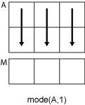
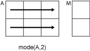

mode
Most frequent values in array
Syntax
Description
M = mode(A)A, which is the most frequently
occurring value in A. When there are multiple values
occurring equally frequently, mode returns the smallest of
those values. For complex inputs, the smallest value is the first value in a
sorted list.
If
Ais a vector, thenmode(A)returns the most frequent value ofA.If
Ais a nonempty matrix, thenmode(A)returns a row vector containing the mode of each column ofA.If
Ais an empty 0-by-0 matrix,mode(A)returnsNaN.If
Ais a multidimensional array, thenmode(A)treats the values along the first array dimension whose size does not equal1as vectors and returns an array of most frequent values. The size of this dimension becomes1while the sizes of all other dimensions remain the same.If
Ais a table or timetable, thenmode(A)returns a one-row table containing the mode of each variable. (since R2023a)
Examples
Input Arguments
Input array, specified as a vector, matrix, multidimensional array, table,
or timetable. A can be a numeric array, categorical
array, datetime array, duration array, or a table or timetable whose
variables have any of those data types.
NaN or NaT (Not a Time) values in
the input array, A, are ignored. Undefined values in
categorical arrays are similar to NaNs in numeric
arrays.
Dimension to operate along, specified as a positive integer scalar. If you do not specify the dimension, then the default is the first array dimension whose size does not equal 1.
Dimension dim indicates the dimension whose length
reduces to 1. The size(M,dim) is
1, while the sizes of all other dimensions remain the
same.
Consider an m-by-n input matrix,
A:
mode(A,1)computes the mode of the elements in each column ofAand returns a1-by-nrow vector.
mode(A,2)computes the mode of the elements in each row ofAand returns anm-by-1column vector.
mode returns A if
dim is greater than
ndims(A).
Vector of dimensions, specified as a vector of positive integers. Each element represents a dimension of the input array. The lengths of the output in the specified operating dimensions are 1, while the others remain the same.
Consider a 2-by-3-by-3 input array, A. Then
mode(A,[1 2]) returns a 1-by-1-by-3 array whose
elements are the modes of each page of A.

Output Arguments
Tips
The
modefunction is most useful with discrete or coarsely rounded data. The mode for a continuous probability distribution is defined as the peak of its density function. Applying themodefunction to a sample from that distribution is unlikely to provide a good estimate of the peak; it would be better to compute a histogram or density estimate and calculate the peak of that estimate. Also, themodefunction is not suitable for finding peaks in distributions having multiple modes.
Extended Capabilities
Version History
Introduced before R2006aSee Also
mean | median | histogram | histcounts | sort